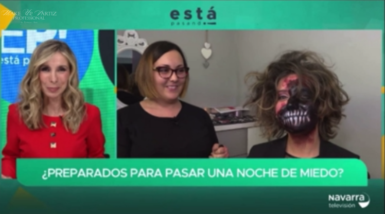
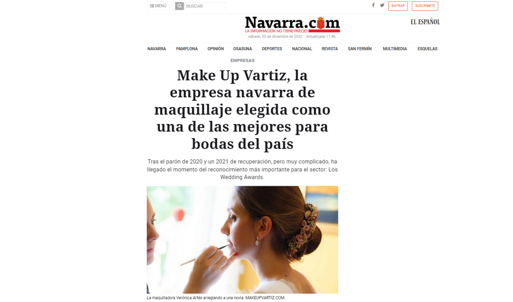
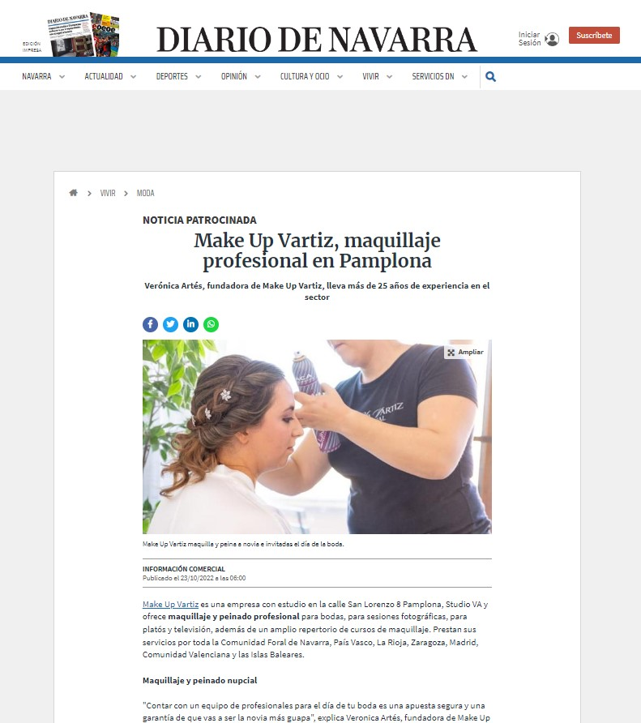
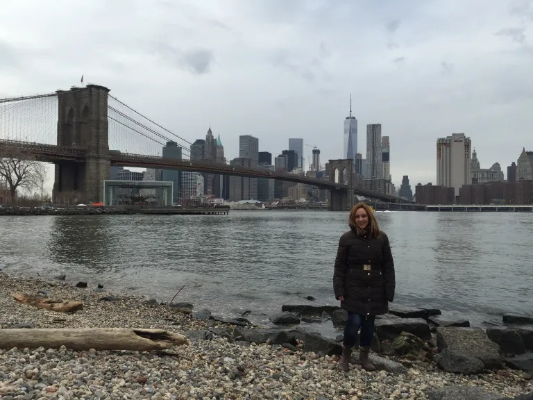

Una selección de trabajos realizados por Verónica Artés en bodas, eventos, cine, televisión y editorial.
.webp)
.webp)
.webp)
.png)

Maquillaje Halloween by Verónica Artés Make Up Vartiz en directo NavarraTV 2023
Leer más
Make Up Vartiz reconocida como una de las mejores empresas de maquillaje para bodas en España
Leer más
Make Up Vartiz empresa destacada en el sector nupcial en diario de navarra
Leer más
Make Up Vartiz participó en el videoclip WHO YOU REALLY ARE? de Johnny Garso
Leer más
Making of del videoclip «Caza de pañuelos» de Rayden, con maquillaje realizado por el equipo de Make Up Vartiz y alumnas de MKV School.
Leer más
La artista Wendy Superstar brilló en Got Talent España con un maquillaje profesional realizado por Verónica Artés en Mediaset, destacando por su fuerza escénica y estética impactante.
Leer más
Verónica Artés formó parte del equipo de maquillaje de Got Talent España en Telecinco, viviendo una experiencia profesional única en Mediaset junto a artistas y presentadores del programa.
Leer más
Un recorrido profesional por las mejores tiendas y marcas de maquillaje en Nueva York, donde Verónica Artés analiza productos, técnicas y centros especializados para artistas del maquillaje.
Leer más